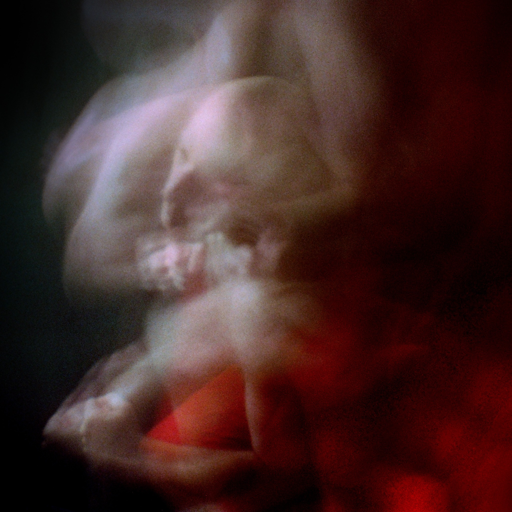

A photographic series exploring the body in motion, the instability of perception, and the space between physical gesture and psychological experience.
selected images
project statement
This series explores movement, gesture, and emotional expression through blurred figures and ambiguous encounters. Bodies overlap, shift, and dissolve into their surroundings, resisting a fixed reading of what is happening. The photographs hold a space between action and stillness, presence and absence, recognition and abstraction.
Made through an experimental approach to 35mm photography and image-making, the work uses softness, grain, shadow, and color to draw attention away from literal description and toward the felt experience of a moment. Rather than explaining a single narrative, the five images invite viewers to sit with uncertainty and consider how movement alters the way a body—and an emotion—can be seen.
artist bio
Nicholas D’Angelo is an artist and educator whose photographic practice explores action, movement, perception, and emotional states. Working with 35mm film, scanned negatives, and digital image manipulation, he creates atmospheric photographs that move between representation and abstraction. He is an Assistant Professor of Art + Media + Design at East Stroudsburg University of Pennsylvania. His work has been exhibited nationally and internationally, including presentations at Sarah Spurgeon Gallery, the Cultural Center of Cape Cod, Fotofoto Gallery, and Glasgow Gallery of Photography.
@ndangelo_artist